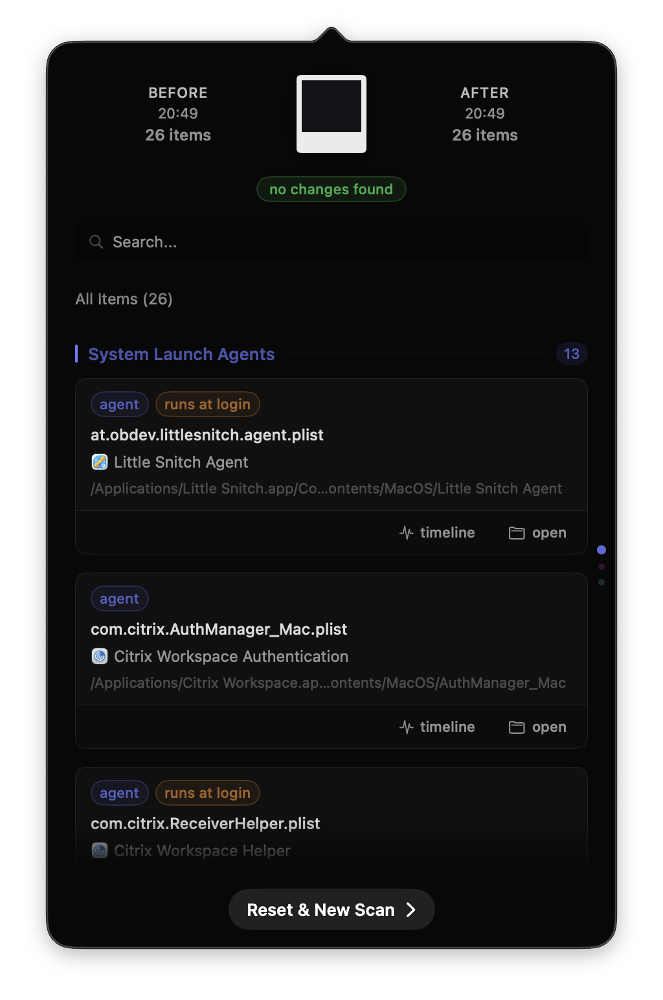
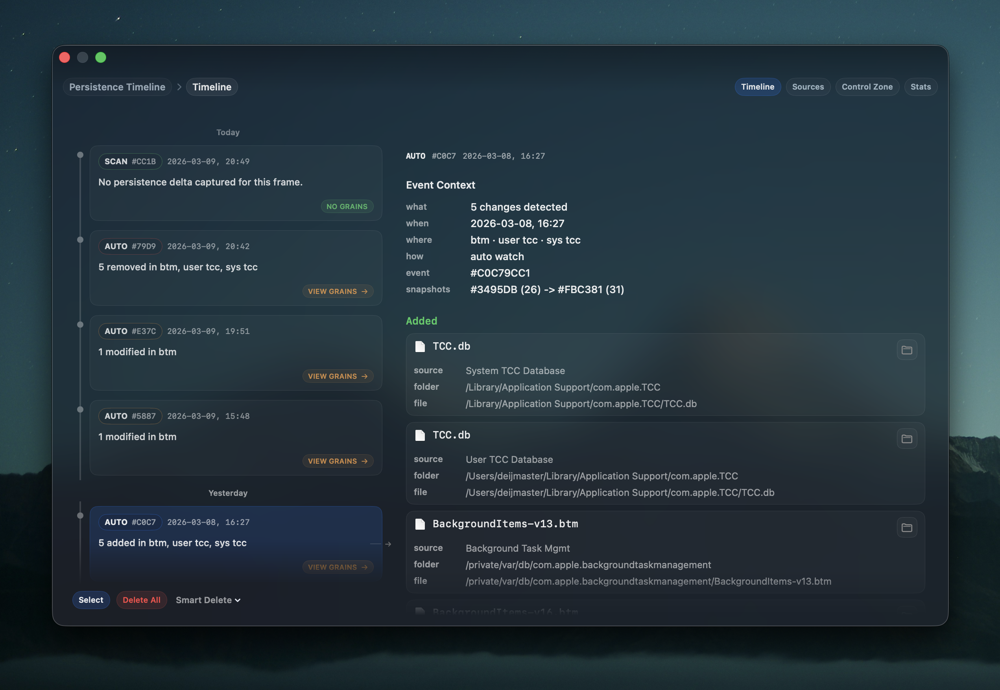
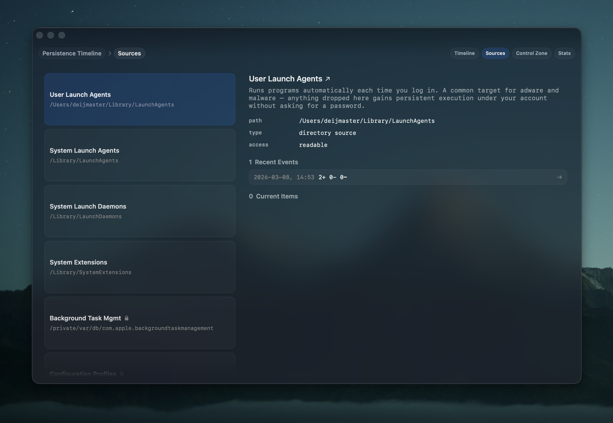
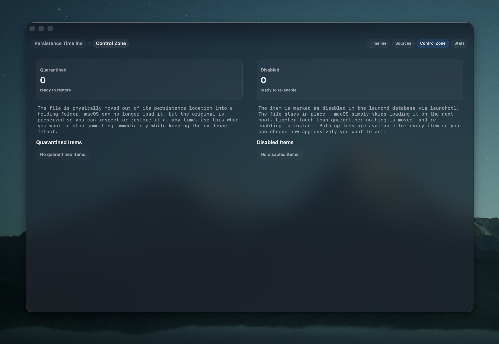
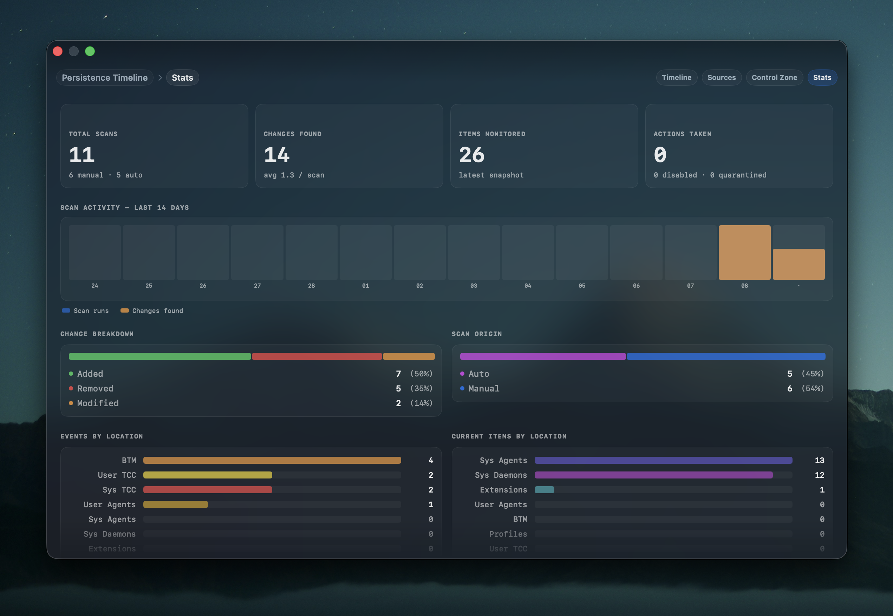

Wrap any install with a before/after snapshot — or let LatentGrain watch continuously and alert you the moment something appears. Launch agents, daemons, system extensions — nothing gets added to your Mac without you knowing.

Use it when you need it, or let it run quietly in the background. Both modes give you the same clear, readable output.
Hit "Shoot Before," install your app, hit "Shoot After." LatentGrain diffs the two snapshots and shows you exactly what was added, removed, or changed — nothing more, nothing less.
Enable auto-scan and LatentGrain monitors your persistence locations in the background. Every change lands in the Timeline with a timestamp and full detail — and you get a quiet notification so nothing slips by unnoticed.
Every scan — manual or automatic — is recorded in the Persistence Timeline. Review what changed last week, compare locations over time, or drill into a single event months later.
A full history of everything LatentGrain has ever detected — timestamped, labeled, and searchable. Click any event to see exactly which files were added, removed, or modified and where they live. Nothing scrolls off, nothing gets lost.

Each persistence location explained — what it does, why it matters, and a full history of what's changed there. Not just a file list: context that helps you decide whether something belongs or doesn't.

Two levels of response when something looks wrong. Quarantine moves the file out of reach while keeping it intact for inspection. Disable tells macOS to skip loading it — lighter touch, instant to undo. Both are non-destructive. You stay in control.

Total scans, changes found, which locations are most active, auto vs manual breakdown. Not a threat dashboard — just the facts about your Mac's persistence layer, so you can spot patterns before they become problems.

Direct DMG download. No App Store, no subscription, no account required.
LatentGrain.dmgFree to use, forever. If it saves you time or worry, a small sponsorship goes a long way.